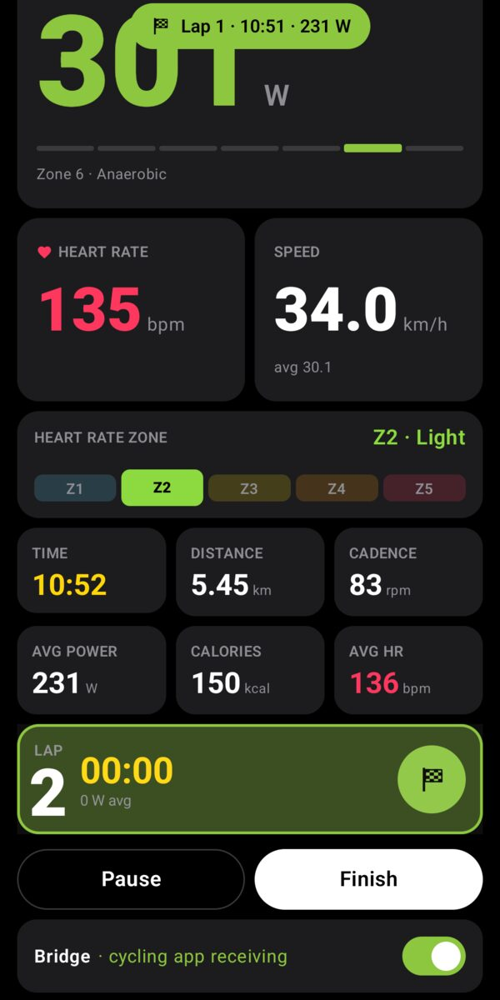
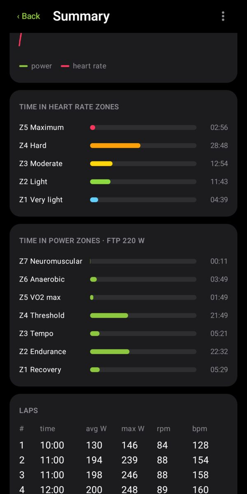
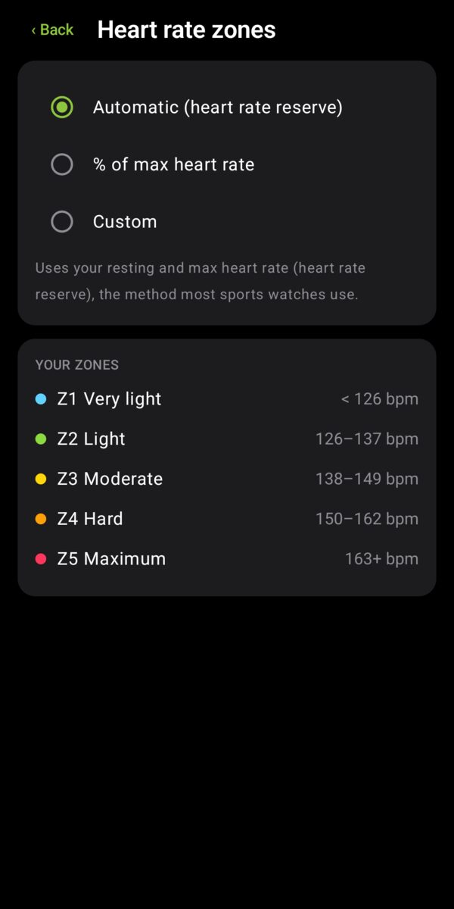
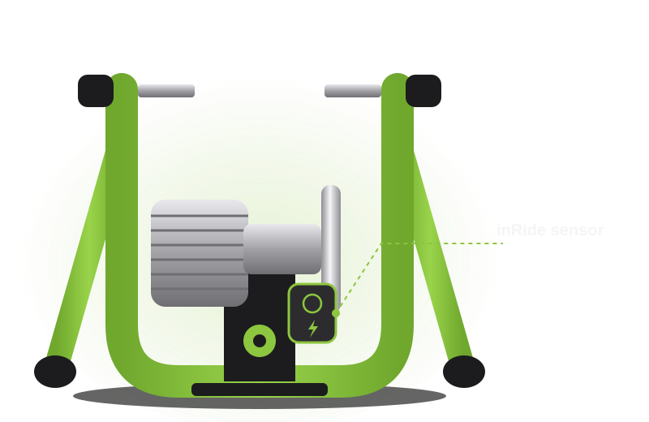

FluidBridge
for Kinetic inRide · Android
Your fluid trainer.
A power meter again.
FluidBridge reads your Kinetic inRide sensor and turns your Android phone into a standard Bluetooth power meter for your cycling app. Ride with power, heart rate and zones, and keep every ride on your phone.
Free for 14 days. Then a one-time US$ 5.99. No subscription.
How it works
Sensor in. Power out.
Your trainer already knows how hard you push. FluidBridge speaks the inRide's own language and hands the numbers to your cycling app the standard way.
Kinetic inRide
The pod on your fluid trainer measures the roller.
FluidBridge
Your Android phone shows live numbers, records the ride and becomes a power meter.
Your cycling app
On a computer, tablet or TV, it pairs the phone as a Bluetooth power meter and heart rate monitor.
Riding screen
Everything at a glance.
Big numbers you can read from the saddle, in the colors you already know.
- Power averaged over 3 seconds, W/kg and your power zone.
- Heart rate from a chest strap or any Bluetooth broadcaster, with its zone.
- Speed, cadence, distance, calories and averages for the ride.
- Laps with one tap: the phone buzzes and shows the lap you just closed.

The bridge
One switch.
Any cycling app.
Turn the bridge on and your phone appears as a standard Bluetooth power meter and heart rate monitor. Pair it inside your cycling app, then ride with the screen off.
- Tested with MyWhoosh on a Mac.
- Works with apps that accept a standard Bluetooth power meter, on computers, tablets and TVs.
- Heart rate from your strap goes along in the same connection.
Your rides
A training log that stays yours.
Every ride is saved on your phone with the numbers that matter. Share it as a .FIT file or sync it to Health Connect when you choose.


Features
Small app. Serious numbers.
Accurate power
Kinetic's own fluid power curve, checked against 5,000 packets decoded by Kinetic's code.
Calibration
A guided spindown tells you when to sprint and when to stop, then checks the roller pressure.
Heart rate zones
Automatic (heart rate reserve), % of max, or your own custom zones.
Training metrics
Normalized power, IF, TSS, W/kg, time in 7 power zones and 5 heart rate zones, laps.
.FIT export
Upload to Strava, Garmin Connect, TrainingPeaks, Intervals.icu and other platforms.
Health Connect
Sync a ride with one tap so your other health and fitness apps see it.
Compatibility
Made for the inRide.
Kinetic has phased the inRide 2 out of its new app and of some training apps. FluidBridge makes it a standard Bluetooth power meter again, and works with the green inRide 3 too.
Which sensor do I have?
The inRide is the small box on the resistance unit, next to the flywheel, with a magnet in the roller. Look at its color:
- Black, "Kinetic Bluetooth Smart": inRide 2, the sensor of the first Road Machine Smart and Rock and Roll Smart, also sold as a kit for classic Kinetic fluid trainers.
- Green: inRide 3, also on the Smart 2 trainers.
- Black with "Powered by Wahoo" on the back: the first inRide (2012).

| Sensor or trainer | FluidBridge |
|---|---|
| inRide 2 (black, Bluetooth only), on Road Machine Smart and Rock and Roll Smart, or added to a classic Road Machine, Rock and Roll or Pro | Works |
| inRide 3 (green), also on the Smart 2 trainers | Works, tested |
| Standard and Pro flywheel | Works |
| Kinetic Smart Control trainers (R1 and others) | Not needed: they already work with cycling apps |
| First inRide (2012, "Powered by Wahoo" on the back) | Not tested |
| Other brands | No: the inRide protocol is Kinetic's own |
Phone: Android 8.0 or newer with Bluetooth LE. The bridge needs a phone that can advertise over Bluetooth LE (most phones since 2017). Keep a fresh coin-cell battery in the pod.
Price
Try it. Then keep it.
Free trial
14 days
Everything works: bridge, ride recording, zones, export.
Full version
US$ 5.99
One payment on Google Play, yours for good. No subscription, no account. Live numbers, calibration and your saved rides stay free.
Questions
Kinetic inRide owners ask.
My Kinetic inRide 2 stopped working with my training app. Can FluidBridge help?
Yes. Kinetic has phased the inRide 2 out of its new app and of some third-party training apps. FluidBridge reads the inRide with Kinetic's own protocol and re-broadcasts your power, cadence and heart rate as a standard Bluetooth power meter and heart rate monitor, which cycling apps pair like any other sensor.
Does it work with the green Kinetic inRide 3?
Yes, tested on a green inRide 3 on a Kinetic fluid trainer. It also works with the black inRide 2, the sensor of the first-generation Road Machine Smart and Rock and Roll Smart and of the inRide kit for classic Road Machine, Rock and Roll and Pro trainers.
Which cycling apps work with it?
Any app that pairs a standard Bluetooth power meter (Cycling Power), on a computer, tablet, phone or TV, for example Zwift, MyWhoosh, Rouvy, TrainerRoad or Wahoo SYSTM. Tested with MyWhoosh on a Mac.
Is it an iPhone app?
FluidBridge is an Android app (Android 8.0 or newer). Your cycling app can run on anything: Mac, Windows, iPad, iPhone, Apple TV or Android.
Can my cycling app control the resistance (ERG mode)?
No. A fluid trainer cannot change its resistance, so FluidBridge is a power meter, not a smart trainer. Your cycling app shows your power and computes your virtual speed from it.
Do I need the Kinetic Fit app or an account?
No. FluidBridge works on its own, with no account and no internet access. Close Kinetic Fit while you ride: the inRide talks to one app at a time.
How much does it cost?
Everything is free for 14 days. Then a one-time purchase of US$ 5.99 on Google Play keeps the bridge and ride recording. No subscription.
Privacy
No account. No cloud.
No internet access.
Your rides and settings live on your phone. Nothing is sent to us, ever. Read the privacy policy.